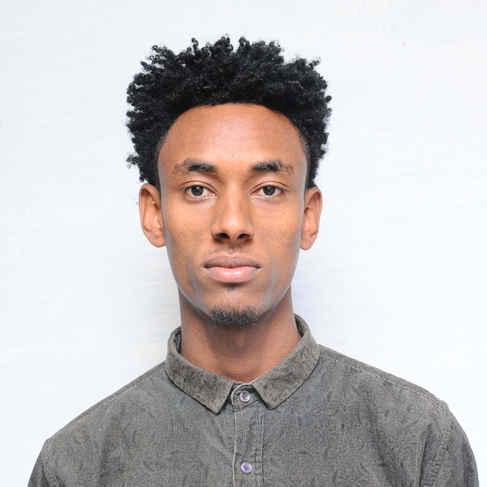

Yishak Endale | WDD 130

Hello! My name is Yishak Endale and I am from Ethiopia, the capital city of Addis Ababa. I've been fascinated by technology and computers from a young age, and this passion has led me to pursue a career in web development. I really enjoy the creative process of building websites and web applications, as well as the problem-solving aspects of coding. In my free time, I like to stay active by going on hikes in the beautiful Ethiopian countryside, playing soccer with friends, and reading books on technology, entrepreneurship, and personal development. Looking ahead, my biggest aspiration is to one day start my own software company that develops innovative solutions to address the unique needs and challenges facing people in Ethiopia and across Africa. I'm driven by a desire to use my technical skills and business acumen to create positive change and improve lives through the power of technology. It's an exciting prospect, and I'm looking forward to continuing to learn, grow, and work towards making that dream a reality.